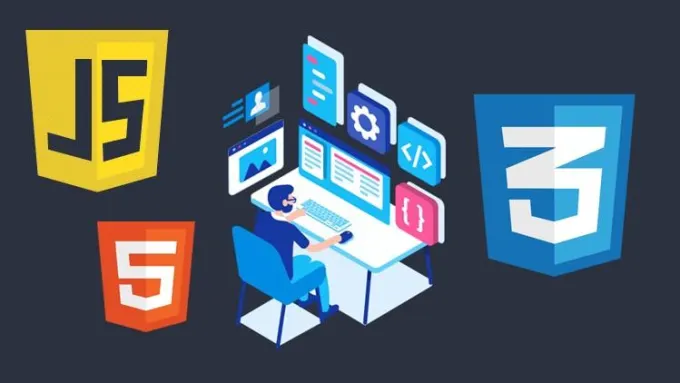

|
|
 |  |
Le développeur front-end traduit les maquettes que le designer crée. S'il n’y a pas de designer dans l’équipe, il peut être responsable de la partie design. En ligne directe avec l’utilisateur, son objectif est de créer un site sur lequel les utilisateurs voient les informations dans un format facile à lire et pertinent.
Le développeur front-end doit maîtriser les 3 langages suivants : le HTML, le CSS et le Javascript. Ces langages seront les piliers de son métier.